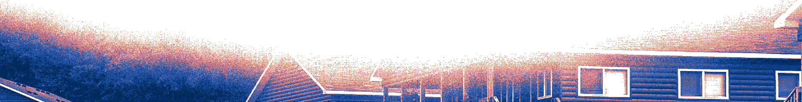

Summit Case Competition
Canada's largest free high school case competition. One day, three rounds and real cases, judged by professionals from Big 4 firms, banks and venture capital.
Crafting the leaders of tomorrrow

What is The Creation Foundation?
The Creation Foundation is run entirely by high school students. We design and host the competitions we always wanted to compete in: case competitions judged by industry professionals, hackathons built around real problems, and workshops with founders and executives who have done it themselves. Every event is built to feel like the real thing, because the problems, the mentors and the feedback are real.
Most top youth competitions charge registration fees that keep talented students out. Every competition, hackathon and workshop we run costs $0 to enter, for every student, every time.
At its heart, The Creation Foundation is a place to learn by doing. Students take on real business problems, build real products, and present to people who run real companies. It is a chance to meet other students who are just as driven, learn from mentors who have been there, and leave with skills, confidence and a network that last well beyond high school. What matters is not where you start, but how much you grow.
And we are just getting started. The Creation Foundation is built by students, for students, and every event we run is shaped by the people who compete in it.
Canada's largest free high school case competition. One day, three rounds and real cases, judged by professionals from Big 4 firms, banks and venture capital.
One of our signature competitions. Students go head to head on fast-paced challenges that reward creativity, strategy and nerve.
Build something real in a single weekend. Teams turn ideas into working products with help from mentors, then demo them to judges.
Clubs bring entrepreneurship into high schools, with workshops, guest speakers and practice cases all year round.
Every event is run by students. Volunteer as an organizer, logistics lead or ambassador and gain real leadership experience.
Every competition, workshop and resource is free for high school students. No registration fees, ever.
A few numbers that define how we work.
$0
Cost to students
100%
Youth-run
∞ possibilities
What we are creating
Gabriel Morgan
Chief Technology Officer, Arc'teryx
Shantanu Mehta
Investment Associate, Spring
Industry leaders
To be announced
We are a youth-run nonprofit. We run free case competitions, hackathons, school clubs and volunteer programs for high school students.
Any high school student. No experience is needed, just curiosity and the drive to learn.
Nothing. Every competition, hackathon, workshop and club is free for students.
Summit is Canada's largest free high school case competition: one day, three rounds, teams of five, and judges from Big 4 firms, investment banks and venture capital.
The Tyche Cup is one of our signature competitions, named after the Greek goddess of fortune. It is a fast-paced challenge that rewards creativity, strategy and quick thinking.
No. Many of our competitors are doing their first case or hackathon. We run workshops beforehand so everyone starts ready.
Yes. Most of our competitions are team-based. Team sizes and rules are shared with each event.
Venue details are announced with each event.
Yes. Reach out and we will help you set up a chapter, with resources, workshop materials and speakers.
Yes. Students help organize every event we run, and it is one of the best ways to build real leadership experience.
High school students. Every part of the organization, from events to partnerships, is led by youth.
We partner with companies and leaders who want to support the next generation of founders, through judging, mentoring, speaking or sponsorship.